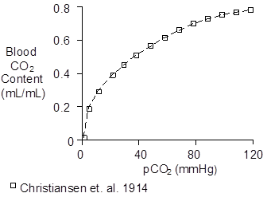
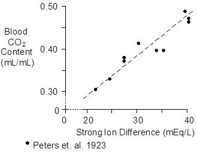
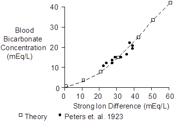
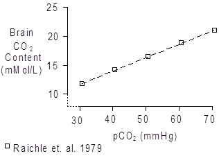

Exercise > Bicarbonate
The total carbon dioxide in blood is proportional to its partial pressure, as shown below.

The slope of the CO2 solubility curve between 40 and 45 mmHg is 0.0045 (mL/mL)/mmHg. Blood passing through the lungs looses 0.04 mL/mL of CO2 while pCO2 decreases 5 mmHg, as shown below.

A little bit more than ½ of the CO2 loss in the lungs is due to the 5 mmHg excursion down the venous dissociation curve. The remainder of the CO2 loss is due to the downward shift in the dissociation curve, the Haldane effect, as pO2 increases from 40 mmHg (75% saturation) to 100 mmHg (100% saturation).
While the amount of CO2 in the blood is a function of the partial pressure of CO2, it is an even more sensitive function of the strong ion difference (see Acid-Base Balance). This relationship is shown below.

Most of the carbon dioxide in the blood is actually in the form of bicarbonate, with small fractions in solution and bound to the amino acids of red cell hemoglobin and plasma proteins.
Direct solubility is 0.00069 mL/mL for each mmHg of partial pressure (Austin et. al. 1963). Thus, about 5% of the blood’s carbon dioxide is in solution.
The distribution of CO2 in the blood appears to be
Bicarbonate – 88%
In Solution – 5%
Carbamino Bonds – 7%
This distribution can be used to estimate blood bicarbonate concentration using total blood CO2 data.

 Skeletal Muscle
Skeletal Muscle
Bicarbonate concentration in skeletal muscle is less than bicarbonate concentration in blood, with typical values of 10 mMol/L in skeletal muscle (Sahlin et. al. 1977, Sahlin et. al. 1978).
Bicarbonate concentration in skeletal muscle falls to 4.6 mMol/L after exhaustive exercise (Sahlin et. al. 1978) and then returns to control with a time constant of roughly 20 minutes.
Lactate concentration rose from 2 mMol/L to 29, suggesting that the strong ion difference in skeletal muscle is in the range of 50 to 60 mEq/L.
General Tissue
There not be a single value for tissue bicarbonate content in general.
Raichle et. al. (1979) reported 16 mMol/L at a pCO2 of 45 mmHg in rhesus monkeys, shown below.

This is a greater CO2 content than the values reported for skeletal muscle.
Chemistry
The molecular weight of bicarbonate (HCO3-) is 61.
Units
Total blood CO2 content is reported as mL (of gas) / mL (of blood) and also as mMol/L.
A mMol of gas occupies a standard volume of 22.4 mL. Multiply mL/mL by 44.6 to get mMol/L
The favored units for bicarbonate are mEq/L.
References
Austin, W.H., E. Lacombe, P.W. Rand and M. Chatterjee. Solubility of carbon dioxide in serum from 15 to 38 C. J. Appl. Physiol. 18:301-304, 1963.
Christiansen, J., C.G. Douglas and J.S. Haldane. The absorption and dissociation of carbon dioxide by human blood. J. Physiol. 48:244-277, 1914.
Peters, J.P., A.J. Eisenman and H.A. Bulger. Studies of the carbon dioxide absorptive curve of human blood. II. The nature of the curve representing the relation of pH to BHCO3. J. Biol. Chem. 55:709-716, 1923.
Raichle, M.E., R.L. Grubb, Jr. and C.S. Higgins. Measurement of brain tissue carbon dioxide content in vivo by emission tomography. Brain Res. 166:413-417, 1979.
Sahlin, K., A. Alvestrand, J. Bergström and E. Hultman. Intracellular pH and bicarbonate concentration as determined in biopsy samples from the quadriceps muscle of man at rest. Clin. Sci. Mol. Med. 53:459-466, 1977.
Sahlin, K., A. Alvestrand, R. Brandt and E. Hultman. Intracellular pH and bicarbonate concentration in human muscle during recovery from exercise. J. Appl. Physiol. 45:474-480, 1978.